전자계산기제어산업기사(구) (2006-09-10 기출문제)
1과목: 프로그래밍일반
1. 프로그래머가 프로그램 내에서 정의하고 이름을 줄 수 있는 자료 객체는?
- 변수
- 정수
- 실수
- 유리수
(정답률: 알수없음)

2. C 언어의 특징으로 옳지 않은 것은?
- 컴파일(compile) 과정 없이 실행 가능한 언어이다.
- 1972년 미국 벨 연구소의 데니스 리치에 의해 개발되었다.
- 이식성이 높은 언어이다.
- 고급 언어(high level language)이다.
(정답률: 알수없음)
3. 운영체제의 성능 평가 요소로 거리가 먼 것은?
- 처리 능력
- 비용
- 반환 시간
- 신뢰도
(정답률: 알수없음)
4. 컴파일 기법의 언어가 아닌 것은?
- FORTRAN
- COBOL
- C
- BASIC
(정답률: 알수없음)
5. 구문 분석기가 올바른 문장에 대해 그 문장의 구조를 트리로 표현한 것으로 루트, 중간, 단말 노드로 구성되는 트리는 무엇인가?
- 파스 트리
- 라운드 트리
- 시프트 트리
- 토큰 트리
(정답률: 알수없음)
6. 프로그램 개발 과정에서 프로그램 안에 내재해 있는 논리적 오류를 발견하고 수정하는 작업은?
- loading
- debugging
- linking
- hashing
(정답률: 알수없음)
7. 구조화 프로그래밍의 기본 구조에 해당하지 않는 것은?
- 순서(sequence)구조
- 선택(selection)구조
- 반복(iteration)구조
- 그물(network)구조
(정답률: 알수없음)
8. C 언어에서 나머지를 구하는 잉여 연산자는?
- %
- @
- #
- !
(정답률: 알수없음)
9. C 언어에서 정수형 자료 선언시 사용하는 것은?
- char
- float
- double
- int
(정답률: 알수없음)
10. 시스템 프로그래밍 언어로 가장 적당한 것은?
- C
- COBOL
- FORTRAN
- BASIC
(정답률: 알수없음)
11. C 언어에서 사용하는 기억클래스에 해당하지 않는 것은?
- auto
- static
- register
- scope
(정답률: 알수없음)
12. 프로그램 언어의 실행 과정 순서로 옳은 것은?
- 로더 → 링커 → 컴파일러
- 컴파일러 → 로더 → 링커
- 링커 → 컴파일러 → 로더
- 컴파일러 → 링커 → 로더
(정답률: 알수없음)
13. 매크로 프로세서의 기본 수행이 아닌 것은?
- 매크로 정의 인식
- 매크로 정의 저장
- 매크로 호출 저장
- 매크로 호출 인식
(정답률: 알수없음)
14. 교착 상태 발생의 필요 충분 조건이 아닌 것은?
- 선점
- 상호 배제
- 점유 및 대기
- 환형 대기
(정답률: 알수없음)
15. 구조적 프로그램에 대한 설명으로 옳지 않은 것은?
- 프로그램의 수정 및 유지 보수가 용이하다.
- 프로그램의 구조가 간결하며 흐름의 추적이 가능하다.
- 실행시간의 단축을 위해 GOTO 문을 가급적 많이 사용 한다.
- 프로그램의 정확성이 증가된다.
(정답률: 알수없음)
16. 다음 중 스트림 자료 활용의 예가 가장 많은 언어는?
- SNOBOL 4
- COBOL
- PL/1
- C
(정답률: 알수없음)
17. C 언어의 주석문 사용 방법은?
- "/#" 와 "#/" 사이에 작성한다.
- "/*" 와 "*/" 사이에 작성한다.
- "/$" 와 "$/" 사이에 작성한다.
- "/&" 와 "&/" 사이에 작성한다.
(정답률: 알수없음)
18. BNF 심볼 중 택일을 의미하는 것은?
- ::=
- < >
- |
- #
(정답률: 알수없음)
19. 로더의 기능이 아닌 것은?
- 번역
- 할당
- 연결
- 재배치
(정답률: 알수없음)
20. 수식 표기법 중 연산 기호는 두 연산자 사이에 표현되고 산술연산, 논리연산, 비교연산 등에 주로 사용되며, 이항 연산자에 적합한 표기법은?
- 최후(last-fix)표기법
- 전위(prefix)표기법
- 중위(infix)표기법
- 후위(postfix)표기법
(정답률: 알수없음)
2과목: 전자계산기구조
21. 2진법의 수 (1101.11)2 을 10진법으로 표시하면?
- 11.75
- 13.55
- 13.75
- 15.3
(정답률: 알수없음)
22. 다음 중 인터럽트의 기본요소가 아닌 것은?
- 인터럽트 요청신호
- 인터럽트 처리기능
- 인터럽트 스테이트
- 인터럽트 취급루틴
(정답률: 알수없음)
23. 컴퓨터의 성능을 높이기 위하여 명령의 처리속도를 CPU의 속도와 같도록 하기 위해서 기억장치와 CPU 사이에 사용하는 기억장치는?
- ROM
- virtual memory
- DRAM
- cache memory
(정답률: 알수없음)
24. AND 명령을 실행하는 마이크로 동작 순서로 옳은 것은?
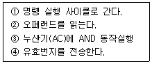
- ④-③-②-①
- ④-②-③-①
- ①-④-②-③
- ①-④-③-②
(정답률: 알수없음)
25. (011001)2 의 1의 보수(One's Complement)는?
- 011000
- 011010
- 100110
- 011001
(정답률: 알수없음)
26. 논리식 Y=A+AB+AC를 간략화 하면?
- Y = A
- Y = B
- Y = A + B
- Y = A + C
(정답률: 알수없음)
27. 다음 중 번지필드가 필요 없는 명령은?
- Skip
- Branch
- Jump
- Call
(정답률: 알수없음)
28. 다음 중 인터럽트(interrupt)의 발생 요인이 아닌 것은?
- 에러(error)
- 정전
- 입ㆍ출력
- 서브루틴 콜(subroutine call)
(정답률: 알수없음)
29. op-code가 8비트이면 명령어는 몇 개 생성될 수 있는가?
- 27 - 1
- 27
- 28
- 28 - 1
(정답률: 알수없음)
30. Gray code (011011)G 을 2진수로 변환시키면?
- (110010)2
- (010110)2
- (010010)2
- (111000)2
(정답률: 알수없음)
31. 중앙연산처리 장치의 구성 부분이 아닌 것은?
- 제어장치
- 주기억장치
- 보조기억장치
- 연산장치
(정답률: 알수없음)
32. 연관(associative) 기억장치에 대한 설명으로 가장 적합한 것은?
- 실제로는 보조기억장치를 사용하는 방법이다.
- 주기억장치를 확장한 것과 같은 효과를 제공한다.
- 데이터의 내용에 의해 접근되는 메모리 방식이다.
- 사용자가 프로그램 크기에 제한 받지 않고 실행이 가능하다.
(정답률: 알수없음)
33. 명령 코드가 명령을 수행할 수 있도록 필요한 기능을 제공하여 주는 역할을 하는 것은?
- 누산기
- 제어 장치
- 레지스터
- 번지 필드(field)
(정답률: 알수없음)
34. 다음 중 7bit ASCII 코드로 숫자 31을 나타내면?
- 0110011 0110001
- 1000011 1000001
- 1110011 1110001
- 0000011 0000001
(정답률: 알수없음)
35. 주변장치와 기억장치 사이에서 중앙처리장치의 지시를 받아 정보를 이송하는 기능을 가진 것은?
- 기록장치
- 채널
- 연산장치
- 보조기억장치
(정답률: 알수없음)
36. 컴퓨터의 성능을 표시하는 요소 중 가장 중요한 것은?
- 프로그램
- 사용코드
- 해상도
- 대역폭
(정답률: 알수없음)
37. 다음 중 프로세서의 제어 장치에 대한 설명 중 옳지 않은 것은?
- 고정 배선 방법과 마이크로프로그램 방식이 있다.
- 마이크로프로그램 방식은 고정 배선 방법보다 더 비싸다.
- 고정 배선 방법은 부품의 수를 최대화 하여 작동 속도를 높이는데 목표가 있다.
- 마이크로프로그램 방식에서는 마이크로프로그램을 저장하기 위한 제어 메모리가 필요하다.
(정답률: 알수없음)
38. 접근 시간(access time)을 옳게 나타낸 것은?
- 접근시간 = 탐색시간 + 대기시간 + 전송시간
- 접근시간 = 탐색시간 + 대기시간 + 실행시간
- 접근시간 = 탐색시간 + 대기시간
- 접근시간 = 탐색시간 + 실행시간
(정답률: 알수없음)
39. 수치 자료의 표현에 보수(complement)표현을 사용하는 목적은?
- 가산을 빠르게 처리하기 위해서
- 감산을 가산 형태로 처리하기 위해서
- 제산을 빠르게 처리하기 위해서
- 승산을 가산 형태로 처리하기 위해서
(정답률: 알수없음)
40. 연산의 실행을 위해서 언제나 스택(Stack) 영역에 접근해야 하는 주소(Address) 방식은?
- 0-주소방식
- 1-주소방식
- 2-주소방식
- 3-주소방식
(정답률: 알수없음)
3과목: 마이크로전자계산기
41. 컴퓨터의 주변(외부) 또는 내부로부터 긴급 서비스 요청에 의해 CPU가 현재 실행 중인 일을 중단하고, 그 요청에 할당한 서비스를 해주는 것을 무엇이라 하는가?
- 인터럽트(interrupt)
- 메이저 상태(major state)
- PSW(program status word)
- 채널(channel)
(정답률: 알수없음)
42. 자료자신이라고 불리는 주소지정 방식으로 명령의 operand 부분에 실제 데이터가 기록되어 있어 메모리 참조를 하지 않고 데이터를 처리하는 방식은?
- implied addressing mode
- indexed addressing mode
- relative addressing mode
- immediate addressing mode
(정답률: 알수없음)
43. 어떤 컴퓨터에서 MAR(Memory Address Register)이 12비트로 되어 있다면 메모리 장치가 포함할 수 있는 워드 수는 모두 몇 개인가?
- 1,024개
- 4,096개
- 16,384개
- 65,536개
(정답률: 알수없음)
44. 다음 코드(code) 중 특히 마이크로 컴퓨터 및 데이터통신에서 많이 채택하고 있는 코드는?
- ASCII code
- EBCDIC code
- BCD code
- Hamming code
(정답률: 알수없음)
45. 8 비트의 데이터 버스와 16비트의 어드레스 버스를 갖는 마이크로컴퓨터 주기억장치의 최대 용량은?
- 256 KB
- 128 KB
- 64 KB
- 32 KB
(정답률: 알수없음)
46. 데이터 전송이 CPU의 제어 없이 메모리와 입ㆍ출력 장치 간에 직접 이루어지는 고속 입ㆍ출력 제어방식은?
- DMA
- isolated I/O
- interrupt I/O
- programmed I/O
(정답률: 알수없음)
47. 스택(stack) 구조의 컴퓨터에서 ADD나 MUL 등의 명령에 사용하는 주소 방식은?
- three-address
- two-address
- one-address
- zero-address
(정답률: 알수없음)
48. EPROM(erasable programmble ROM)에 대한 설명 중 옳지 않은 것은?
- 전원이 끊어져도 지워지지 않는다.
- 필요한 경우 내용을 변경시킬 수 있다.
- 주기적으로 내용을 다시 써 넣어야 한다.
- 재 사용이 가능하다.
(정답률: 알수없음)
49. 컴퓨터를 운영하는데 필요한 프로그램들로 운영체제, 번역프로그램, 라이브러리 프로그램 등을 무엇이라 하는가?
- Application Program
- System Program
- Package Program
- Conversion Program
(정답률: 알수없음)
50. 입ㆍ출력 장치와 주기억장치를 비교 설명한 것으로 옳지 않은 것은?
- 동작 속도 : 입ㆍ출력 장치가 주기억장치에 비해 저속이므로 이를 해결하기 위해 버퍼를 이용한다.
- 전송 정보의 단위 : 입ㆍ출력 장치는 문자 단위의 전송을 행하고 주기억장치는 워드 단위의 전송을 행한다.
- 착오의 발생률 : 입ㆍ출력 장치의 전송 중 발생하는 에러가 주기억장치 전송 중 발생하는 에러보다 발생률이 높다.
- 동작의 동기화 : 주기억장치는 자율적으로 동작하는 반면 입ㆍ출력 장치는 동기적으로 동작한다.
(정답률: 알수없음)
51. 어셈블리어 또는 고급언어로 작성된 프로그램은 실행하기 위해서는 먼저 어셈블링 또는 컴파일링 하게 된다. 이 때 번역된 기계어 프로그램을 무엇이라 하는가?
- 소스 프로그램
- 목적 프로그램
- 리스트 프로그램
- 응용 프로그램
(정답률: 알수없음)
52. 다음 중 동시에 양쪽 방향으로 전송이 가능한 전송 방식은?
- on-line
- simplex
- half-duplex
- control signal
(정답률: 알수없음)
53. 다음 중 매핑 프로세스(mapping process) 방법이 아닌 것은?
- cache mapping
- direct mapping
- associative mapping
- set-associative mapping
(정답률: 알수없음)
54. 다음 중 컴퓨터를 이용하여 수행하는 프로그램의 작업에 대하여 논리적으로 주어진 문제를 해결해 나가는 과정을 알기 쉽게 도식화 하여 나타내는 것은?
- 불 대수
- 순서도
- 매뉴얼
- 프로그램 언어
(정답률: 알수없음)
55. 마이크로컴퓨터와 외부장치와의 자료를 주고받는 방법이 아닌 것은?
- DMA(Direct Memory Access)
- Programmed I/O
- Interrupt I/O
- HDLC(High-level Data Link Control)
(정답률: 알수없음)
56. 1-주소 명령어를 사용하는 CPU에서 연산의 결과가 저장되는 레지스터는?
- Program Counter
- Accumulator
- Address Register
- Stack Pointer
(정답률: 알수없음)
57. 스택(stack)에서 처리될 내용의 번지를 지정하는 장소는?
- stack indicator
- stack pointer
- push
- pop
(정답률: 알수없음)
58. 인터럽트(interrupt)를 발생하는 장치들을 직렬로 연결하는 하드웨어적인 우선 순위제어 방식은?
- 폴링(polling)
- 데이지 체인(daisy chain)
- 인터페이스(interface)
- 직렬전송방식
(정답률: 알수없음)
59. 오퍼레이팅 시스템에서 제어 프로그램에 속하는 것은?
- 언어 번역 프로그램
- 서비스 프로그램
- 사용자 프로그램
- 데이터 관리 프로그램
(정답률: 알수없음)
60. 다음 중 인터럽트의 기본요소로 타당하지 않는 것은?
- 인터럽트 상태
- 인터럽트 요청 신호 회로
- 인터럽트 처리 기능
- 인터럽트 취급 루틴
(정답률: 알수없음)
4과목: 논리회로
61. Parity 코드에 대한 올바른 설명은?
- 에러 검출 코드이다.
- 입ㆍ출력 장치에 쓰인다.
- 문자를 나타내는 코드다.
- 아날로그 정보를 디지털 정보로 교환한다.
(정답률: 알수없음)
62. 다음은 무슨 회로인가?
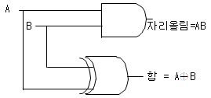
- 반가산기
- 전가산기
- 기수패리티회로
- 일치회로
(정답률: 알수없음)
63. 4 입력 변수의 Decoder는 몇 개의 출력을 갖는가?
- (2×4)개
- (42-1)개
- 4개
- 24개
(정답률: 알수없음)
64. J-K 플립플롭의 특성 방정식으로 옳게 표현한 것은?
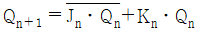
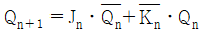
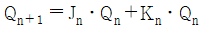
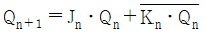
(정답률: 알수없음)
65. 비동기식 5진 계수 회로는 몇 개의 플립플롭을 필요로 하는가?
- 2개
- 3개
- 4개
- 5개
(정답률: 알수없음)
66. 논리식 중 옳지 않은 것은?
- A+0=A
- Aㆍ1=A
- AB+AB=AB
- A(B+C)=AC
(정답률: 알수없음)
67. 메모리의 size가 2048× 16 일 때 MAR, MBR의 size는 어떻게 되는가? (단, MAR : Memory Address Register, MBR : Memory Buffer Register)
- MAR=11, MBR=16
- MAR=12, MBR=16
- MAR=11, MBR=8
- MAR=12, MBR=8
(정답률: 알수없음)
68. 모드-6 카운터를 구성하기 위한 플립플롭의 최소 수는?
- 2
- 3
- 4
- 5
(정답률: 알수없음)
69. 다음 중 16진수 B6을 2진수로 표시한 것으로 옳은 것은?
- 10110110
- 10100110
- 10010110
- 10110010
(정답률: 알수없음)
70. RS 플립플롭의 동작 설명 중 옳지 않은 것은?
- S=0, R=0 입력일 때 불변 상태가 된다.
- S=1, R=1 입력일 때 리셋 상태가 된다.
- S=1, R=0 입력일 때 세트 상태가 된다.
- S=1, R=1 입력일 때 토글 상태가 된다.
(정답률: 알수없음)
71. 10개의 입력 선과 16개의 출력 선을 갖는 ROM이 있다. 이 ROM의 전체 Bit 수는?
- 10×16
- 210×16
- 10×216
- 210×216
(정답률: 알수없음)
72. 10진수의 45를 16진수로 변환한 것은?
- 2A
- 2B
- 2C
- 2D
(정답률: 알수없음)
73. 다음과 같은 카르노프 맵을 가장 간단한 논리식으로 나타내면?
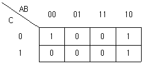
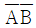
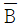
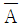
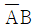
(정답률: 알수없음)
74. 마스터 슬레이브 플립플롭은 어떤 문제를 해결하기 위한 회로인가?
- 딜레이(Delay) 현상
- 부정상태 제거
- 토글(Toggle) 상태
- 레이스(Race) 현상
(정답률: 알수없음)
75. 전가산기(FA)의 회로 구성은?
- 2개의 반가산기와 1개의 OR Gate로 구성
- 2개의 반가산기와 1개의 NOR Gate로 구성
- 2개의 반가산기와 1개의 AND Gate로 구성
- 2개의 반가산기와 1개의 NAND Gate로 구성
(정답률: 알수없음)
76. T 플립 플롭에서 T=0일 때 Qn+1의 동작 상태는?
- Qn
- 0
- 1
- NAND
(정답률: 알수없음)
77. 다음과 같은 게이트의 출력을 나타낸 것은?
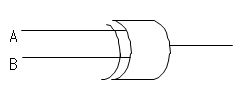
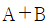
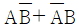
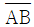
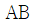
(정답률: 알수없음)
78. 다음 중 디코더(decoder)는 어떤 회로의 집합으로 이루어지는가?
- AND 회로
- OR 회로
- NOT 회로
- NOR 회로
(정답률: 알수없음)
79. 그레이 코드(Gray code) (01011111)G을 2진 코드로 변환한 것으로 옳은 것은?
- (01101010)2
- (10010110)2
- (01011110)2
- (01100101)2
(정답률: 알수없음)
80. 순서논리회로를 설계하려 할 때 그 순서가 옳은 것은?
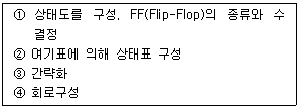
- ②-③-④-①
- ①-②-③-④
- ①-④-②-③
- ④-③-②-①
(정답률: 알수없음)
5과목: 정보통신개론
81. 프레임을 송신, 수신하는 스테이션을 구별하기 위해 사용되는 스테이션 식별자 필드는?
- 주소 필드
- 프레임 검사 필드
- 제어 필드
- 플래그 필드
(정답률: 알수없음)
82. OSI 참조모델의 7계층에 대한 것으로 틀린 것은?
- 물리계층 : 제 1계층
- 트랜스포트계층 : 제 6계층
- 응용계층 : 제 7계층
- 네트워크계층 : 제 3계층
(정답률: 알수없음)
83. 기존의 설치된 전화의 동선케이블을 이용하여 고속 데이터 전송을 가능하게 하는 것은?
- HUB
- ADSL
- FAX
- WEB-PDA
(정답률: 알수없음)
84. 시분할(Time-sharing)시스템과 가장 관계 없는 것은?
- 실시간(real-time) 응답이 주로 요구된다.
- 컴퓨터와 이용자가 서로 대화형으로 정보를 교환한다.
- 컴퓨터 파일자원의 공동이용이 불가능하다.
- 다수 단말기가 1대의 컴퓨터를 공동으로 사용한다.
(정답률: 알수없음)
85. 다음 중 광통신에서 전송모드의 종류가 아닌 것은?
- 복합모드
- 계단형 다중모드
- 단일모드
- 언덕형 다중모드
(정답률: 알수없음)
86. 다음 중 베이스 밴드(base band) 전송방식이 사용되는 변조방식은?
- 주파수편이 변조
- 위상편이 변조
- 펄스코드 변조
- 진폭편이 변조
(정답률: 알수없음)
87. 일단 통신경로가 설정되면 데이터의 형태, 부호, 전송제어 절차 등에 의한 제약을 받지 않는 교환방식은?
- 패킷교환방식
- 중계교환방식
- 광교환방식
- 회선교환방식
(정답률: 알수없음)
88. 화상정보가 축적된 정보센터의 데이터베이스를 TV수신기와 공중전화망에 연결해서 이용자가 화면을 보면서 상호대화 형태로 각종 정보검색을 할 수 있는 뉴미디어는?
- Teletext
- Videotex
- HDTV
- CATV
(정답률: 알수없음)
89. 다음 중 셀룰러 시스템의 특징과 관련 없는 것은?
- 가입자 용량을 극대화하기 위하여 주파수를 재사용 한다.
- 통화 중인 가입자가 새로운 서비스 지역으로 진입할 때 통화의 단절 없이 계속 통화가 될 수 있게 한다.
- CDMA에서 셀 분할은 정적분할 방법만을 사용한다.
- 국가 간의 로밍도 가능하다.
(정답률: 알수없음)
90. 위상변조를 하는 동기식 변복조기의 신호속도가 4800[Baud]이고 디비트(dibit)를 사용한다면 통신속도는?
- 1200[bps]
- 2400[bps]
- 4800[bps]
- 9600[bps]
(정답률: 알수없음)
91. 다음 중 패킷교환망의 특징으로 틀린 것은?
- 회선교환망보다 회선 이용률이 좋다.
- 장애발생시 대체 경로 선택이 가능하다.
- 전송량 제어와 전송속도의 변환이 가능하다.
- 대량의 데이터 전송시 전송지연이 적어진다.
(정답률: 알수없음)
92. 샤논-하트레이(Shannon Hartley)의 통신채널용량은?
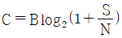
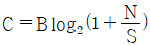
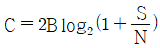
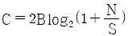
(정답률: 알수없음)
93. OSI의 7계층 중 통신망의 연결을 수행하는 기능을 제공하며 ITU-T 권고 X.25 프로토콜의 대표적인 계층은?
- 응용 계층
- 프리젠테이션 계층
- 네트워크 계층
- 세션 계층
(정답률: 알수없음)
94. 다음 중 위성 통신의 다중접속 방법이 아닌 것은?
- 신호분할 다중접속
- 주파수분할 다중접속
- 시분할 다중접속
- 코드분할 다중접속
(정답률: 알수없음)
95. 다음 중 뉴미디어의 분류에 속하지 않는 것은?
- 방송계 뉴미디어
- 통신계 뉴미디어
- 전파통신 뉴미디어
- 패키지계 뉴미디어
(정답률: 알수없음)
96. 다음 중 모뎀의 기능과 관련 없는 것은?
- 변조와 복조 기능
- 펄스를 전송신호로 변환
- 라우팅 기능
- 데이터 통신
(정답률: 알수없음)
97. 프로토콜방식 중 바이트 단위로 프레임을 구성하는 것은?
- BSC방식
- SDLC방식
- HDLC방식
- ITU-T 권고의 X.25
(정답률: 알수없음)
98. OSI 참조모델 중 암호화, 코드변환 및 압축 등을 수행하는 계층은?
- 응용 계층
- 프리젠테이션 계층
- 세션 계층
- 데이터링크 계층
(정답률: 알수없음)
99. TCP/IP 관련 응용 계층 프로토콜이 아닌 것은?
- FTP
- TELNET
- SMTP
- ISO
(정답률: 알수없음)
100. 다음과 같은 장점을 가지고 있는 전송매체는?
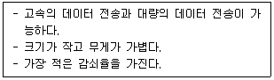
- 동축케이블(Coaxial cable)
- 꼬임선(Twisted pair cable)
- 스크린케이블(Screen cable)
- 광섬유케이블(Optical fiber cable)
(정답률: 알수없음)